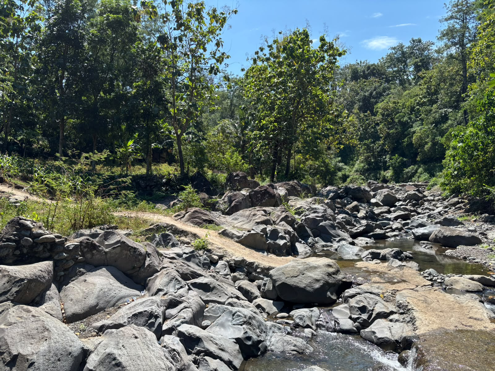
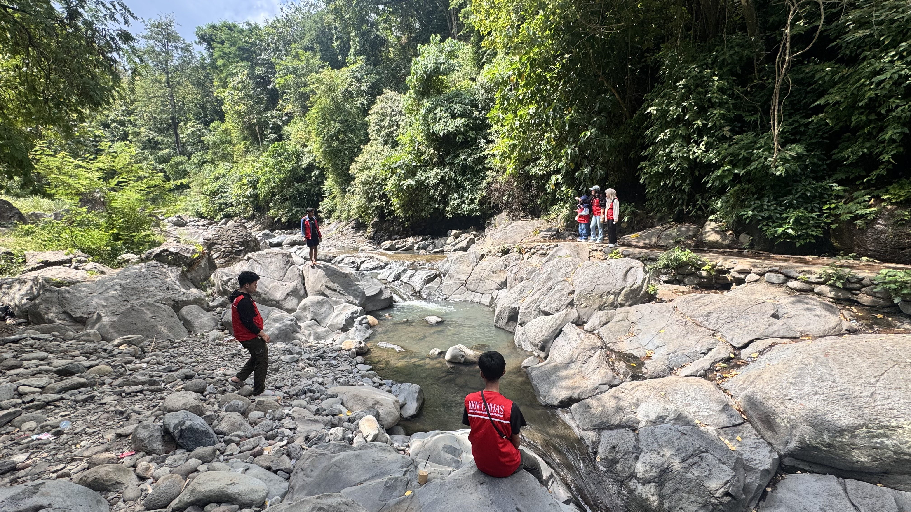
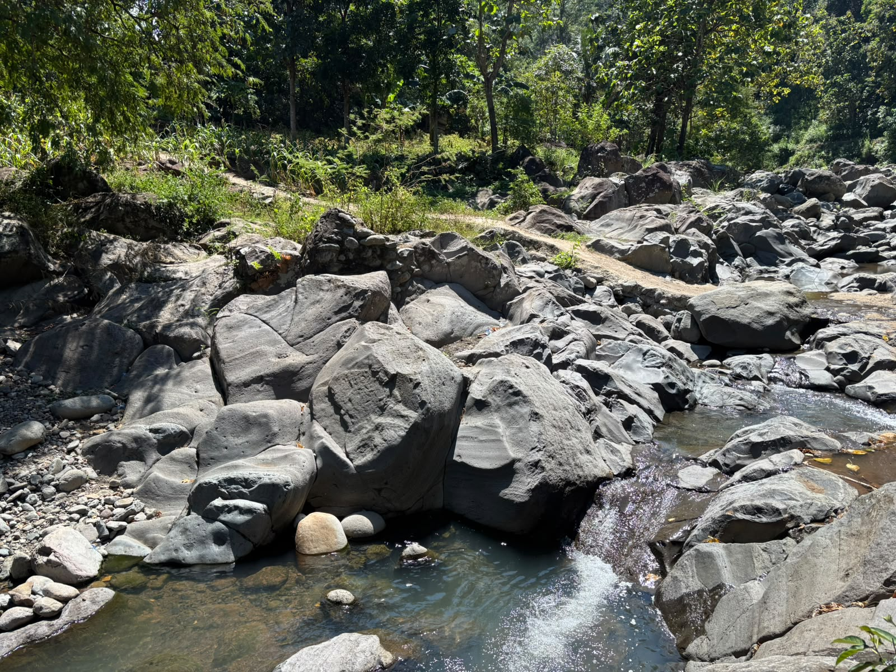
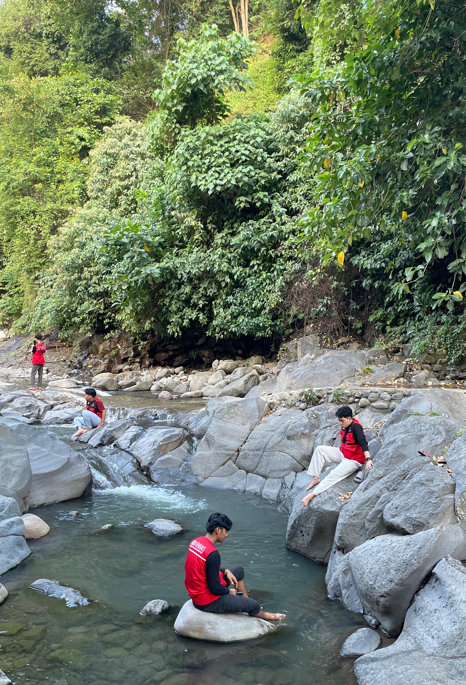

Informasi kawasan dan lingkungan Sungai Calendu di Kelurahan Onto, Kecamatan Bantaeng, Kabupaten Bantaeng.
Sumber Pegunungan
Kec. Bantaeng
Area Terbuka
Sungai Calendu merupakan alur perairan alami yang membentang di wilayah Kelurahan Onto, Kecamatan Bantaeng, Kabupaten Bantaeng.
Aliran air sungai ini bersumber langsung dari kawasan pegunungan Bantaeng dan mengalir membelah perbukitan serta area pemukiman warga setempat. Kawasan ini memiliki suasana yang hijau dan asri, yang sering dimanfaatkan warga sekitar untuk beraktivitas dan berkumpul.
Gambaran umum kondisi fisik, lingkungan, dan aksesibilitas kawasan Sungai Calendu di Kelurahan Onto.
Air sungai mengalir langsung dari kawasan pegunungan melewati celah bebatuan alami.
Tepian sungai terbuka yang sering dimanfaatkan warga sekitar untuk berkumpul.
Berada di wilayah Kelurahan Onto dan dapat diakses menggunakan kendaraan roda dua maupun empat.
Kawasan lingkungan publik yang dirawat dan dijaga kebersihannya secara gotong royong oleh warga.
Dokumentasi foto asli suasana dan aliran Sungai Calendu.




Kelurahan Onto, Kecamatan Bantaeng, Kabupaten Bantaeng, Sulawesi Selatan.
Area terbuka untuk umum.
Mohon bersama-sama menjaga kebersihan dengan tidak membuang sampah ke aliran sungai.
Sampaikan laporan, masukan, atau kendala terkait kondisi Sungai Calendu secara langsung kepada pengelola Kelurahan Onto.